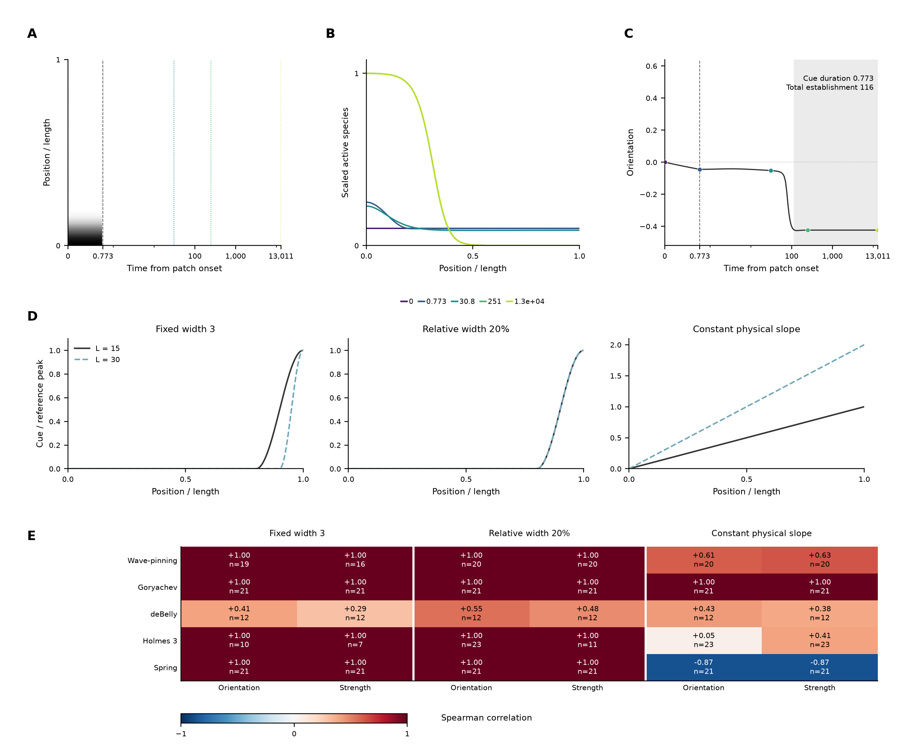
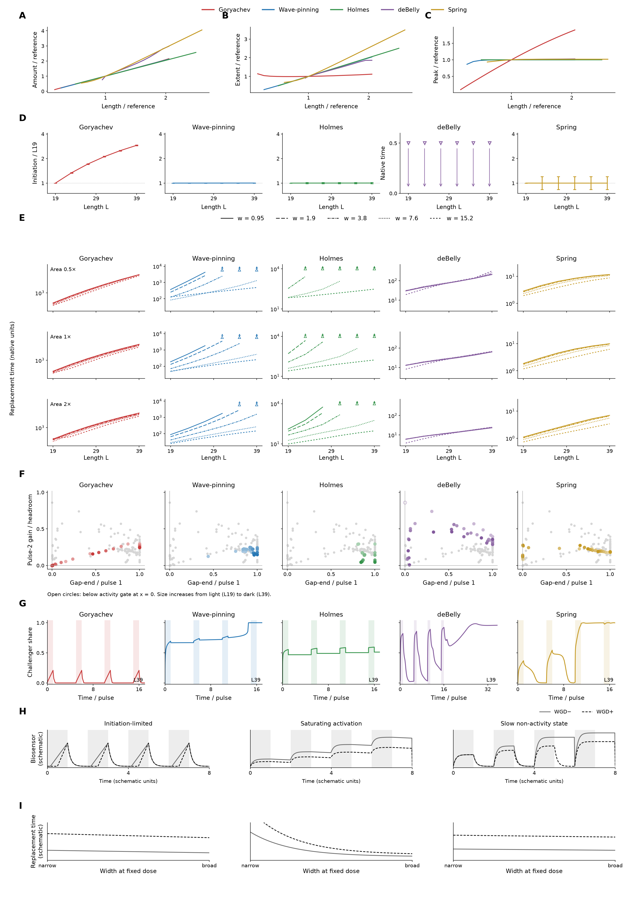
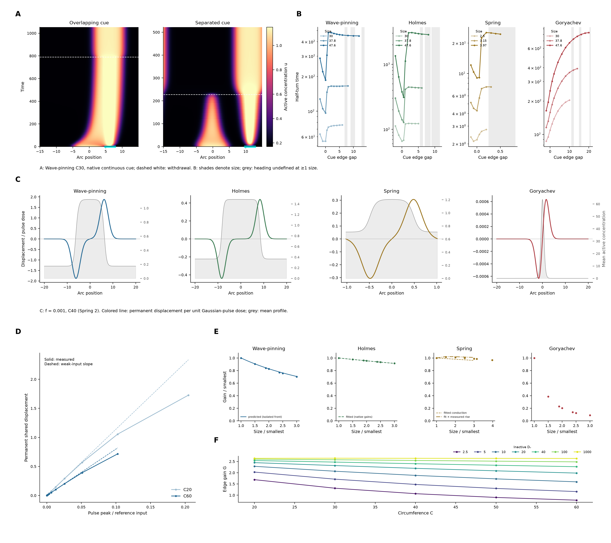
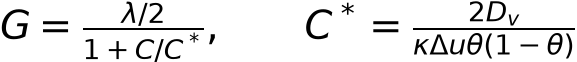
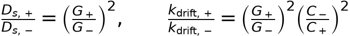
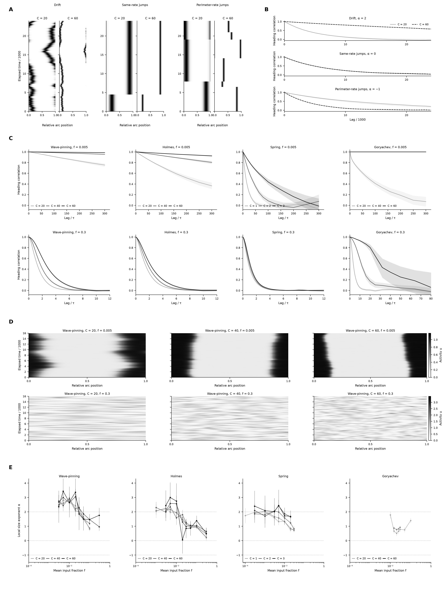
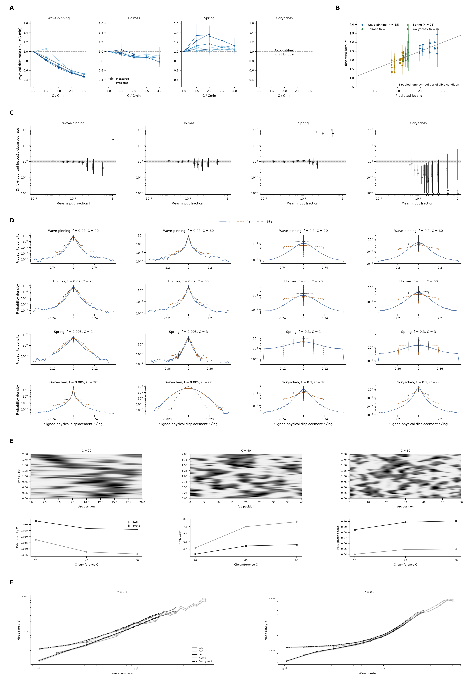
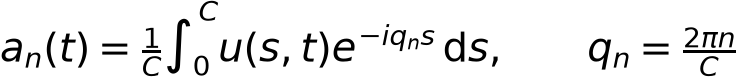
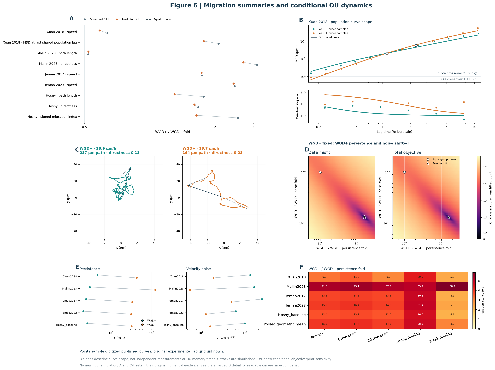
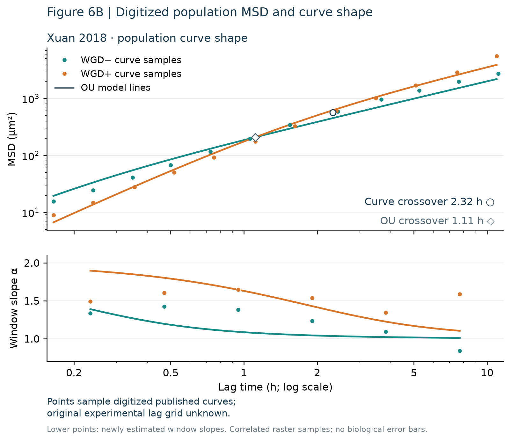

(1)
(1)Generated 2026-10-26T15:22:04.625753+00:00. Document producer finished; rebuild to load revised data. No timed refresh.
Integrated outline_v13 · Figures 1–6 with legends · Brief
Pilot checks: Conduction penalty against size/diffusivity · Holmes native/fast mode rates with seed intervals
Figure and legend · Scientific methods and results

A, Recorded Wave-pinning preparation cue at length 15: a finite left patch, withdrawn at 0.773 native time units. White to black is zero to peak input; coloured vertical lines mark the profile samples in B.
B, Native active profiles from the same preparation, scaled using the common minimum and span of the displayed snapshots. Colours identify recorded times.
C, Orientation from the same preparation. Grey marks basal verification after establishment arrival at about 116; the cue has already ended. The matched time scale in A and C separates input duration from autonomous development.
D, Three rightward finite challenges restart the identical qualifying nominal-amplitude, relative-20% basal checkpoint at each model and length: fixed physical support 3 (Spring 0.2 native length units), relative support 20%, and a linear ramp with constant physical slope. Patch peaks remain fixed within each model; a fixed-slope ramp has a larger peak in a longer domain. Goryachev patches use the independently selected, length-independent multiplier K=64 (peak 6.4), which makes this a response-permissive comparison rather than a calibrated equal biochemical dose across models.
E, Spearman rank correlation between length and the shortest tested passing pulse duration, separately for orientation replacement and strength replacement, across Wave-pinning, Goryachev, corrected deBelly, Holmes 3 and Spring. Each cell reports the correlation and included successful-length count. All audited scalar successes enter, including those failing the separate native-field tail criterion. At least four distinct successful lengths and nonconstant durations are required; censored and preparation-ineligible cases receive no invented time. The companion duration curves retain all lengths and field-status markers.
After each positive pulse, input returns to the native basal value for 10,000 native time units. Orientation requires all 201 final-500 samples to have scalar orientation above 0.05 and contrast at least 0.05, with orientation range below 0.005. Strength additionally requires every tail orientation to be within 1% of the absolute initial leftward scalar orientation; it does not compare individual pole heights or amounts. The separate native-field tail flag requires pointwise range and projected 500-unit drift within 0.1% of frozen field scales. The reported duration excludes preparation and recovery. It is the shortest passing tested duration, with sampled fail/pass boundaries refined to 1%; narrower unobserved intervals are not excluded.
deBelly uses corrected endpoint commands. Spring retains native length and time units. Cross-model amplitudes and clocks are not calibrated biochemical doses or cellular times.
Figure and legend · Scientific methods and results

Enlarged cells resist replacement through distinct initiation, cue-width and pulse-memory signatures.
A, Incumbent excess amount normalized to the model reference, across the same 97 retained states.
B, Incumbent extent normalized to the model reference, for those same states.
C, Incumbent peak normalized to the model reference, for those same states.
D, Initiation is the time from cue onset until maximum in-cue activity minus the profile minimum exceeds 10% of the model’s L19 incumbent excess peak. Area 1, width 3.8; times are normalized to L19. All six deBelly upper bounds are 0.5 native units (downward arrows); first-update sampling leaves its size dependence unresolved.
E, Replacement time (first eligible challenger share ≥ 0.75) versus length, with a line per width and rows for areas 0.5, 1 and 2. Upward triangles/arrows are lower bounds: the cue never replaced within the horizon (6,000 Wave-pinning; 10,000 Goryachev/Holmes; 2,000 deBelly; 100 Spring, native units). Broad cues rescue Holmes across all lengths; narrow-cue censoring does not establish a growing penalty. Spring native widths equal the displayed widths divided by 38.
F, Gap-1 activity kept versus pulse-2 gain as a fraction of headroom (Eq. 1). Four equal pulses, total ON 1.5 times the model-length commitment calibration; gaps 0–16 pulse durations. Holmes L31–39 uses the L27 calibration. Other models are grey; lightness indicates L. Open circles at x = 0 code activity below the existing visibility gate. At the left wall, deBelly/Spring gain on pulse 2 despite no visible activity; Goryachev never does. The deBelly L19/gap16 first-gap endpoint was checked against native fields.
G, L39 gap4 challenger-share histories, labelled kept / lost / lost then commits; shading marks cue ON. deBelly includes full recovery; others show one post-train pulse duration. Continuous raw shares include below-gate values. deBelly’s later timing and fields remain numerically sensitive (supplement).
H, Prospective biosensor histories for the same pulse train in WGD− and enlarged WGD+ cells. Initiation-limited resetting (Goryachev), saturating activation with gap retention (Wave-pinning/Holmes), and progress retained after activity loss (deBelly/Spring) give distinct dimensionless schematic histories.
I, Prospective equal-dose width responses for those classes: weak width rescue, strong width rescue, and weaker width rescue. Solid grey: WGD−; dashed black: WGD+. These are qualitative assay predictions.
(1)s₁ and s₂ are challenger shares at pulse ends 1 and 2; s_gap1 is the first-gap-end share. An observed endpoint below the existing visibility gate is coded as zero visible share in F; its raw value remains in the CSV.
Figure and legend · Scientific methods and results

Fast cytosol removes Wave-pinning’s size-dependent boundary gain; an isolated-front prediction gives its absolute native-ring gains within 6.9–8.0% without fitting them. Native gain declines less in Holmes and Spring. Goryachev’s gain falls strongly, but no conduction-law comparison is made for that model.
A, Native Wave-pinning C30 active-concentration kymographs for a cue overlapping the incumbent’s 10%-contrast contour (edge gap −1) or separated from it (gap 4). Time starts at cue onset; cyan bars show spatial cue support. White dashed lines mark withdrawal after 95% of the target heading change; subsequent single-domain relaxation is included. Native cue peak 0.1 and support 3 are unchanged.
B, Time to turn halfway toward a continuous cue against its edge gap, at C30, 37.8 and 47.6 (Spring resting sizes 2.5, 3.15 and 3.97). Shades denote size within each model. Open triangles with upward arrows are right-censored lower bounds; grey spans mark gaps at which heading was undefined at one or more sizes. These strong-cue turning times are distinct from weak-pulse susceptibility.
C, Susceptibility to a weak Gaussian pulse, permanent displacement per peak×duration dose, against position at C40 (Spring resting size 2). Colored lines use the native translation-mode adjoint at f=0.001 (Spring mean input 0.004); grey curves and right axes show the same stationary mean active profile. The Gaussian SD is 1.5 (Spring 0.15). Signed gain is localized to the two lateral boundaries.
D, Wave-pinning shared permanent boundary displacement against edge-pulse peak divided by reference input 0.1, at C20 and C60; duration 50. Dashed lines use the weak-input gain. Ten-percent departures are bracketed between 5–20% of reference input in Wave-pinning, 2.6–5% in Holmes, 1.3–2.6% in Spring and 2.6–20% in Goryachev (neighboring tested amplitudes, pooled size ranges). Dose-matched duration sweeps agree within 0.2%.
E, Native edge gain normalized to each model’s smallest size, against relative resting size. Wave-pinning’s solid curve is predicted from the isolated front: G=(λ/2)/(1+C/C*), C*=76.3, with stationary domain fraction θ and no fitted ring gains. Holmes’s dashed curve is fitted to native inverse gain, 1/G=a+bC, C*=a/b≈403. Spring’s dashed conduction curve uses C*≈49, fitted to the free-conduction penalty G(1000,C)/G(D,C)−1 against C/D for D≥1; the dash-dot curve multiplies that fit by the measured free-conduction gain rise. This empirical correction and the apparent native crossover (about 140) are distinct from an isolated-front prediction. Goryachev has points only. Spring’s actual circumference includes extension; its native points use mean input 0.004, the sweep 0.0004. Fit-definition sensitivity is reported in the readme.
F, Wave-pinning adjoint edge gain against circumference at inactive diffusivities 2.5, 5, 10 (native), 20, 40, 100 and 1000. Every point uses the same weak mean input and unchanged reaction kinetics. All 35 Wave-pinning preparations retain a polarized branch, including Dᵥ=2.5 at C60 where the pilot reported domain loss. Fast cytosol largely removes the native size dependence. All quantities use model-native units; none is a calibrated migration velocity or biochemical dose.

(3.1)Wave-pinning crossover uses the isolated front and stationary domain fraction; Holmes uses the native inverse-gain regression and Spring uses the diffusivity-penalty regression, with intrinsic free-conduction rise shown explicitly.

(3.2)Conditional prediction for shared input statistics, response shape and correlated edge motion. The first ratio is physical boundary drift; angular decorrelation additionally includes geometry.

At weak input, enlargement increases native activity-heading persistence, with an exponent near the geometric drift baseline in Holmes and Spring and above it in Wave-pinning. At strong input, the readout is orientation of whole-ring activity imbalance; Spring curves nearly coincide and the size advantage is reduced.
A, Synthetic activity kymographs for a single drifting peak, same-rate random relocations and relocations whose rate scales with circumference, at C20 and C60. Position is relative arc length; grayscale denotes activity from 0 (white) to 1 (black). Time increases upward. These pedagogical baselines have no biochemical kinetics.
B, Heading correlation in the same three baselines, from 1000 seeds; solid and dashed lines indicate C20 and C60, dotted lines the analytic curves. A fixed physical drift diffusivity gives k proportional to C⁻² (α = 2); size-independent jumps give α = 0, and jumps per unit perimeter give α = −1. The same-rate curves coincide.
C, Native-model heading correlation at common weak f = 0.005 and strong f = 0.3, for C20, C40 and C60 (Spring 1, 2 and 3). Size is a light-to-dark grayscale ramp within each facet. Shading is the 95% confidence interval from 2000 seed-bootstrap resamples of the complete retained native histories, recomputed on a dense early-lag grid. Weak-input facets show 0–320τ; strong-input facets show 0–12τ, Goryachev 0–80τ, to resolve their different correlation scales. τ = 50 native time units, Spring 5. Heading correlation is the mean cosine of the change in arg(P), where P is the first Fourier activity moment divided by total activity. These estimates require |P| ≥ 0.1 at both lag endpoints; their coverage is in condition_lag_metrics.csv. At weak input, Goryachev C40 and C60 remain near correlation 1 throughout the window, so their ordering is unresolved. At strong input, Spring curves nearly coincide. In patch fields, heading denotes the orientation of whole-ring activity imbalance, rather than persistence of an established polarity domain. Figure5D shows the ungated distributions.
D, Native Wave-pinning examples at f = 0.005 and 0.3 and C20, C40 and C60, selected as replicate 0 without a seed search. Every panel shows the entire retained post-burn-in interval 16000–32000, on relative arc position. Activity scales are common across sizes at each input; the color bars state the separate weak- and strong-input ranges. Weak input mainly shifts a coherent domain; strong input produces a changing patch field. The kymographs are illustrative, not an event classification.
E, Local α, the negative fitted slope of log heading-decorrelation rate against log circumference in adjacent-size neighborhoods, against mean input f. Lines are size neighborhoods centered on C20, C30, C40, C50 and C60 (Spring 1, 1.5, 2, 2.5 and 3); light to dark follows size. Vertical bars are seed-bootstrap 95% CIs. Missing estimates interrupt curves. Horizontal guides are α = 2, 0 and −1. Native f multiplies reference input 0.1, 1, 4 and 6.4 in Wave-pinning, Holmes, Spring and Goryachev respectively; doses and clocks are not calibrated across models.
All simulations reuse the complete, frozen round6 compact campaign (96–384 independent seeds per condition). Local kinetics, basal preparations and solver outputs are unchanged. α and activity-heading persistence are model observables, distinct from migration persistence or fitted OU velocity-memory parameters.

Weak-input physical drift is suppressed beyond the geometric baseline in Wave-pinning, while drift predictions fail quantitatively for Goryachev. Raw heading distributions and strong-input patch statistics expose the limits of treating every change as translation of one coherent domain.
A, Physical drift diffusivity Ds relative to the smallest ring at the same f, against relative circumference. Solid curves and circles are retained native trajectory estimates; dotted curves are the deterministic susceptibility prediction with shared translation and full input covariance. All designed f ≤ 0.01 with multiple-domain fraction ≤ 0.05 enter; color intensity indexes f (10⁻⁴–10⁻²). Vertical bars are retained seed-bootstrap 95% CIs. The geometric null is 1. Goryachev has no qualified drift bridge and is explicitly unavailable here, rather than treated as a drifting domain.
B, Predicted versus observed local α, pooled over eligible f ≤ 0.01, with a single circle symbol throughout and model color. Prediction comes from deterministic native susceptibility and the same adjacent-size neighborhoods as the observed α; no noisy-data fitting or pooling average is applied. Vertical bars are observed seed-bootstrap 95% CIs; the diagonal is equality. Eligibility requires a defined native mean state, linear-response validation, resolved observed α and neighborhood multiple-domain fraction ≤ 0.05. Goryachev contributes no eligible point, a quantitative failure retained in B_alpha_bridge.csv.
C, Drift plus counted takeover angular loss divided by observed heading decorrelation, at every designed input and size. For each counted takeover whose angle is unavailable, 1 − cos(Δθ) is bounded independently in [0,2]. Vertical segments span the resulting partial-identification interval, not a confidence interval; circles mark its geometric midpoint when positive finite endpoints exist. Gray band is 0.85–1.15. Open triangles with arrows show one-sided intervals or portions extending past the displayed range. Light to dark denotes C20–C60 (Spring 1–3). Missing observed rates cannot supply a ratio. If drift is missing its nonnegative lower bound can be used, but the upper limit is unbounded.
D, Weak-input distributions show model-specific cores and tails: Wave-pinning’s lag-scaled core broadens while its outer width changes less from 4τ to 16τ; Holmes broadens in both core and outer quantiles; Spring’s core broadens while its outer quantile is nearly stable from 4τ to 16τ. Goryachev C20 has a narrow core with a growing broad tail (raw |Δs| > 1.5: 4%, 13%, 22% at τ, 4τ, 16τ), whereas C60 has no mass beyond 1.5, high coherence and no counted switches, consistent with suppression within the observed window. The plotted quantity is raw heading-change probability density at lags τ (blue solid), 4τ (brown dashed) and 16τ (black dotted), with no coherence, contrast or track-identity cut. Weak input near the C20 transition is f = 0.03, 0.02, 0.005 and 0.005 in Wave-pinning, Holmes, Spring and Goryachev; strong input is f = 0.3 for all. Facets separate model, input and C20/C60 (Spring 1/3). Signed Δθ is the principal difference in arg(P), and physical displacement is mean endpoint circumference × Δθ/(2π). Binning is in physical displacement before x and probability density are transformed by 1/√lag and √lag respectively. The signed x axis is linear; y is logarithmic. τ = 50, Spring 5, in native time units. Zero-count bins are omitted without a pseudocount. All retained 96–384 independent seeds per condition enter. At strong input, Wave-pinning, Holmes and Spring spread over most of the wrapped displacement range by 4τ–16τ, so their rescaled outer widths narrow at long lag. Goryachev C60 continues to spread across lags but has weak coherence. These phase changes are not uniquely identifiable as domain relocations.
E, Strong native input produces a Wave-pinning patch field with approximately extensive patch count and residual size dependence in local statistics. Top facets show the first 2000 recorded time units after burn-in at input fraction 0.3, C20/C40/C60, seed 0; grayscale is native active concentration from 0 to 1.5. Lower facets show mean patch density (count divided by circumference), mean physical patch width, and RMS physical patch speed at input fractions 0.1 and 0.3. Patches exceed active concentration 0.65 and span at least 10 native grid cells. Speed is centroid displacement divided by the 5-unit frame interval, between mutually best overlapping regions; unmatched and ambiguous comparisons are excluded. Points are means across 64 independent seeds with 95% seed-bootstrap intervals; widths and matched speeds first pool samples within each seed. Checks at thresholds 0.55 and 0.75 retain the observed directions of size dependence and are documented in the scientific readme. No birth or death statistic is inferred. Patch count rises substantially with circumference while density, width and speed retain smaller systematic size effects; the results therefore do not support an explanation based on exactly unchanged local patch geometry. The inactive-diffusion perturbation in F tests the transport contribution despite these residual local changes.
F, Fast cytosol removes most of Wave-pinning’s strong-input size advantage: mode-1 α changes from 0.90 to 0.36 at f = 0.1 and from 0.46 to 0.02 at f = 0.3; raw-heading α changes from 0.72 to 0.21 and from 0.41 to −0.03, respectively. These headings describe orientation of whole-ring activity imbalance, rather than persistence of an established polarity domain. The plotted rate γ(q) comes from each seed's normalized autocorrelation of the complex Fourier coefficient aₙ(t), defined below, at the sampled lag nearest correlation 0.5; q = 2πn/C. Modes 1–16 are shown when every seed resolves a rate beyond the 5-unit frame interval. Native inactive diffusivity 10 is solid; fast diffusivity 1000 is dashed; C20/40/60 follow a light-to-dark ramp. Each point is the geometric mean across 64 seeds; shading gives 95% percentile seed-bootstrap intervals. Open upward triangles with arrows mark first-lag resolution bounds. Fast-cytosol runs alter only inactive diffusivity and are mechanism tests. The native-minus-fast mode-1 size exponent is 0.544 [0.500, 0.592] at input fraction 0.1 and 0.438 [0.425, 0.452] at 0.3; brackets are 95% paired-seed bootstrap intervals across the three sizes. The Holmes pilot check gives smaller but resolved differences, 0.081 [0.046, 0.117] and 0.081 [0.076, 0.086], respectively. Holmes retains positive mode-1 exponents after fast diffusion (0.82 to 0.74 at f = 0.1; 0.24 to 0.16 at f = 0.3): its smaller transport effects are resolved, while the remaining mode scaling is unexplained.
Physical polarity drift, counted track switching, raw activity heading, complex Fourier-mode relaxation and migration velocity memory are distinct quantities. Fast inactive diffusion is a mechanistic perturbation; all native comparisons retain native local kinetics.

(5.1)Complex spatial Fourier coefficient of active concentration u on a ring of physical circumference C; n is the integer mode index and qₙ its physical wavenumber.
Figure and legend · Scientific methods and results


A, Published/digitized enlarged or polyploid-group to reference-group ratios for nine migration summaries, alongside primary Ornstein–Uhlenbeck (OU) fit predictions. Xuan contributes sampled mean speed and population mean-squared displacement (MSD) at the last shared lag, approximately 10.95 h; Hosny summaries are group medians. Mallin central-bar statistic is not specified by the source and retains the historical mean approximation. These distinct source summaries are not interchangeable measures of persistence.
B, Upper: twelve chosen display samples from each digitized Xuan population MSD curve (small points) and the unchanged fitted analytical OU expectation (solid lines), on logarithmic lag and MSD axes. These are samples of the published raster curves, not recovered experimental lag positions or independent cell observations; the original experimental lag grid is unknown. The open circle identifies the crossover of the full digitized traces at approximately 2.32 h, computed by linear interpolation in native lag and MSD. The open diamond identifies the different fitted OU crossover at approximately 1.11 h. Lower: descriptive slopes of log(MSD) versus log(lag) fitted in six equal log-lag windows of the full digitized curves (points), and matching-window moving OU slopes (solid lines). Each window spans approximately 0.304 decades; both observed and model slopes use the same full window support. Observed raster columns remain correlated and give no biological sample size or confidence interval. These slopes are newly calculated curve-shape summaries, not author-reported local exponents or fitted OU memory times. A constant power-law exponent would appear horizontal; reference values 1 and 2 indicate diffusive and straight-line scaling. The model does not reproduce the complete observed curvature or the observed crossover. The analytical fit, all fitting targets and numerical inputs to A and C–F are unchanged.
C, Representative Xuan primary-fit model-generated tracks, with sampled speed, total path length and directness (net displacement divided by path length). Both groups use identical spatial scales. The tracks are simulations, not published individual-cell trajectories; a slower sampled trajectory can nevertheless have greater endpoint directness. Dashed chords illustrate the contribution of finite-time displacements.
D, With reference-group parameters fixed, vary enlarged-group persistence and velocity-noise ratios. Separate surfaces show change in the descriptive data-misfit score and in the total regularized objective; the selected fit and equal-group reference are marked. The heuristic score is not a calibrated likelihood, and the surfaces are not confidence regions.
E, Primary paired persistence and velocity-noise estimates for Xuan 2018, Mallin 2023, Jemaà 2017, Jemaà 2023 and the Hosny hypoxic baseline. F, Enlarged/reference persistence folds under the primary 10-minute prior, 5- and 20-minute alternatives and stronger/weaker pooling, with the pooled geometric mean. Priors and pooling define conditional sensitivity scenarios, not uncertainty intervals. The Jemaà comparisons constrain speed alone, leaving persistence/noise tradeoffs dependent on hierarchy and priors.
The fitted population contrasts span stable tetraploids, giant polyploids and treatment-induced polyaneuploid cancer cells (PACCs). The inherited WGD+/WGD− labels in the artwork are comparison shorthand and do not establish matched WGD-only interventions in every study. Hosny observations derive from the recovered preprint; equivalence to the journal version remains unresolved.
SUM-159 WGD motility assays; no observations available.